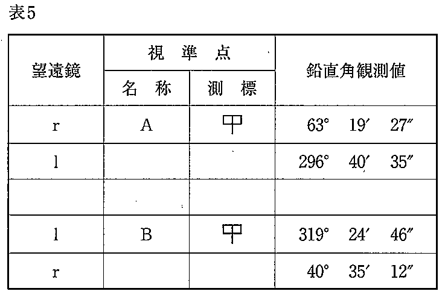
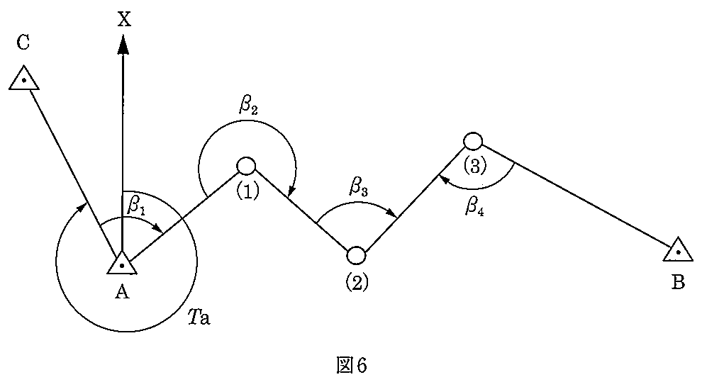
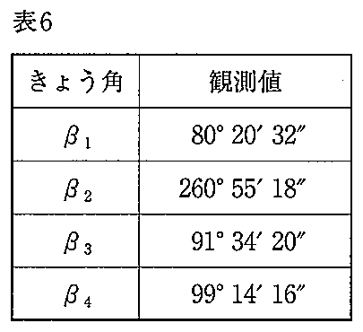
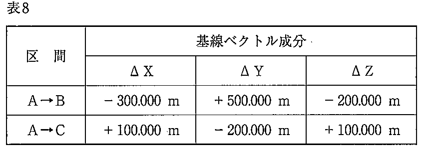
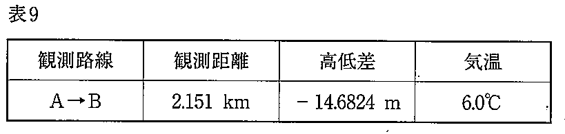
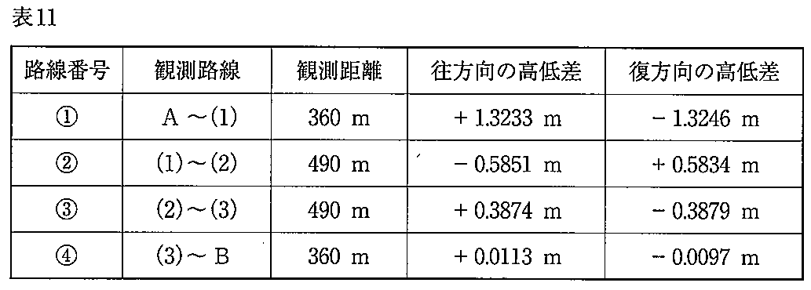
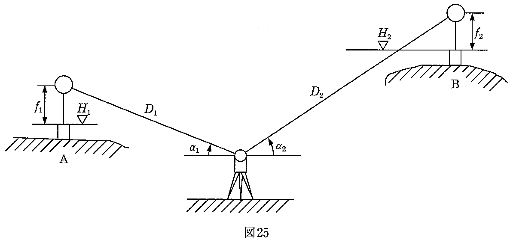
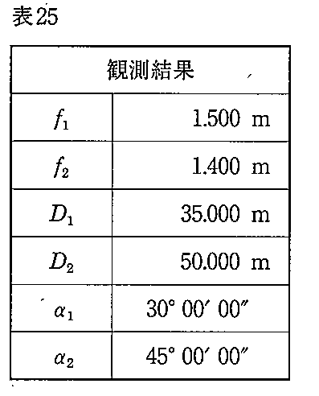
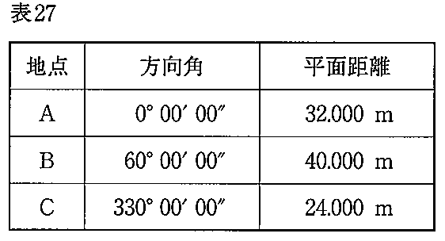

平成25年度（H25）計算問題
測量士補試験の計算問題 11 問。紙と鉛筆で解いてから「答えと解説」を開いてください。関数の値は試験の巻末の関数表を使います。
No.5多角
公共測量における1級基準点測量において，トータルステーションを用いて鉛直角を観測し，表5の結果を得た。点A，Bの高低角及び高度定数の較差の組合せとして最も適当なものはどれか。次の中から選べ。

- 高低角(点A)=－26°40′34″／高低角(点B)=－49°24′47″／高度定数の較差=2″
- 高低角(点A)=＋26°40′25″／高低角(点B)=－49°24′47″／高度定数の較差=2″
- 高低角(点A)=＋26°40′31″／高低角(点B)=－49°24′49″／高度定数の較差=4″
- 高低角(点A)=＋26°40′34″／高低角(点B)=＋49°24′47″／高度定数の較差=4″
- 高低角(点A)=＋26°40′31″／高低角(点B)=＋49°24′50″／高度定数の較差=0″
答えと解説
答え 4
r（望遠鏡が正の向き）の鉛直角は、真上から目標まで測った角です。l（反の向き）は残りの角が読めるので、r ＋ l は 360° になるはず。360° からのずれが高度定数です。B は l が先に書いてあるので、取りちがえないようにします。
B 40°35′12″ ＋ 319°24′46″ ＝ 359°59′58″ → 高度定数 −2″
較差（いちばん大きい値と小さい値の差）＝ 2 − (−2) ＝ 4″
真上からの角は、r と「360° − l」の平均で出します。高低角（水平から上向きの角）は 90° からそれを引いたものです。
63°19′27″ との平均 ＝ 63°19′26″
高低角 ＝ 90° − 63°19′26″ ＝ ＋26°40′34″
40°35′12″ との平均 ＝ 40°35′13″
高低角 ＝ 90° − 40°35′13″ ＝ ＋49°24′47″
No.6多角
図6に示すように，多角測量を実施し，表6のとおり，きょう角の観測値を得た。新点(3)における既知点Bの方向角は幾らか。最も近いものを次の中から選べ。
ただし，既知点Aにおける既知点Cの方向角Taは330°14′20″とする。


- 123°50′14″
- 133°04′45″
- 142°18′46″
- 172°04′26″
- 183°21′34″
答えと解説
答え 1
方向角は、X 軸（北）から右回りに測った向きの角です。A から順に、辺の方向角を 1 つずつ求めていきます。A では、C の方向（方向角 Ta）から右回りに β₁ なので、足すだけです。
360° を超えたので 360° を引いて 50°34′52″
(1) と (2) で測った角 β は、来た方向（1 つ前の点の方向）から右回りに、次の点の方向まで測った角です。来た方向の方向角は、前の辺の方向角 ＋ 180° です。
③ (2)→(3) 131°30′10″ ＋ 180° ＋ 91°34′20″ ＝ 403°04′30″ → 43°04′30″
(3) の β₄ だけは、図 6 の矢印の向きが逆です。B の方向から右回りに、来た方向 (2) まで測っています。
そこで、来た方向 (2) の方向角から β₄ を引きます。
④ (3)→B 223°04′30″ − 99°14′16″ ＝ 123°50′14″
No.8GNSS
GNSS測量機を用いた基準点測量を行い，基線解析により基準点AからBまで，基準点AからCまでの基線ベクトルを得た。表8は，地心直交座標系におけるX軸，Y軸，Z軸方向について，それぞれの基線ベクトル成分（ΔX，ΔY，ΔZ）を示したものである。基準点BからCまでの斜距離は幾らか。最も近いものを次の中から選べ。
なお，関数の数値が必要な場合は，巻末の関数表を使用すること。

- 806.226 m
- 806.464 m
- 806.702 m
- 860.233 m
- 861.390 m
答えと解説
答え 4
基線ベクトルは「ある点から別の点まで、X・Y・Z 方向にどれだけ動くか」を表した数です。B→A は A→B の符号を全部逆にしたものなので、B→C ＝ (A→C) − (A→B) です。
ΔY ＝ −200 − 500 ＝ −700 m
ΔZ ＝ 100 − (−200) ＝ 300 m
斜距離（2 点を結ぶまっすぐな長さ）は、3 つの辺が 400・700・300 の箱の対角線です。三平方の定理を 2 回使うと、3 つの 2 乗を足して √ を付けることになります。
斜距離 ＝ √740,000 ＝ 100 × √74 ＝ 100 × 8.60233 ＝ 860.233 m
No.9水準
公共測量により，水準点AからBまでの間で1級水準測量を実施し，表9に示す結果を得た。標尺補正を行った後の水準点A，B間の高低差は幾らか。最も近いものを次の中から選べ。
ただし，観測に使用した標尺の標尺改正数は20℃において－6.60 μm/m，膨張係数は0.6×10⁻⁶/℃とする。

- －14.6822 m
- －14.6823 m
- －14.6824 m
- －14.6826 m
- －14.6966 m
答えと解説
答え 1
標尺（高さを読む物差し）の目盛りには、わずかな狂いがあります。標尺改正数は 1 m あたりの狂いを直す量（20 ℃ のとき）、膨張係数は温度 1 ℃ で 1 m あたりどれだけ伸びるかです。10⁻⁶ は 100 万分の 1 なので、0.6 × 10⁻⁶ は 1 m あたり 0.6 μm になります（1 μm ＝ 0.000001 m）。気温は 20 ℃ より低いので、縮む（マイナス）ほうです。
1 m あたりの補正 ＝ −6.60 ＋ 0.6 × (−14) ＝ −6.6 − 8.4 ＝ −15.0 μm
高低差 14.6824 m 分 ＝ 15.0 × 14.6824 ≒ 220 μm ≒ 0.0002 m
補正がマイナスなので、高低差の大きさが 0.0002 m 減ります。B は A より低く、高低差はマイナスなので、0 に近づきます。
標尺で読んだのは高さなので、掛けるのは高低差の 14.6824 m。距離の 2.151 km は使いません。
No.10水準
公共測量における1級水準測量を実施するとき水準点間が1.5 kmの路線において，最大視準距離を50 mとする場合，往観測のレベルの設置回数（測点数）は最低何点になるか。次の中から選べ。
- 15点
- 16点
- 29点
- 30点
- 31点
答えと解説
答え 2
水準測量では、レベル（水平に見る望遠鏡）を 2 本の標尺の真ん中に置き、後ろと前の標尺を読んで進みます。レベルから標尺まで（視準距離）が最大 50 m なので、1 回置くと最大 100 m 進めます。
1,500 ÷ 100 ＝ 15 回
ただし、標尺は 2 本 1 組で使い、測点数（レベルを置く回数）は偶数にすると決まっています。15 は奇数なので、次の偶数 16 にします。
No.11水準
水準点AからBまでの間に固定点(1)，(2)，(3)を設置して往復の水準測量を実施し，表11の結果を得た。往復観測値の較差の許容範囲を2.5 mm√S（Sは観測距離，km単位）とするとき，最も適切な処置はどれか。次の中から選べ。
ただし，往方向の観測は，水準点AからBとし，復方向の観測は，水準点BからAとする。
なお，関数の数値が必要な場合は，巻末の関数表を使用すること。

- ①の路線を再測する。
- ②の路線を再測する。
- ③の路線を再測する。
- ④の路線を再測する。
- 再測は行わない。
答えと解説
答え 4
較差は、行き（往方向）と帰り（復方向）で測った高低差の食いちがいです。帰りは符号が逆になるので、往方向と復方向を足したものが較差になります。
② −0.5851 ＋ 0.5834 ＝ −0.0017 m 大きさは 1.7 mm
③ 0.3874 − 0.3879 ＝ −0.0005 m 大きさは 0.5 mm
④ 0.0113 − 0.0097 ＝ 0.0016 m ＝ 1.6 mm
許容範囲 2.5 mm√S と比べます。S は km なので、360 m は 0.36、490 m は 0.49 です。0.6² ＝ 0.36、0.7² ＝ 0.49 なので √ がきれいに外れます。
②・③ 2.5 × √0.49 ＝ 2.5 × 0.7 ＝ 1.75 mm
② 1.7 mm ＜ 1.75 mm
③ 0.5 mm ＜ 1.75 mm
④ 1.6 mm ＞ 1.5 mm → 超えている
許容範囲を超えた④の路線を再測します。
No.13地形
トータルステーション（以下「TS」という。）を用いた縮尺1/1,000の地形図作成において，標高50 mの基準点から，ある道路上の点Aの観測を行ったところ，高低角30°，斜距離24 mの観測結果が得られた。その後，点AにTSを設置し，点Aと同じ道路上にある点B（点Aから点Bを結ぶ道路は直線で傾斜は一定）を観測したところ，標高56 m，水平距離18 mの観測結果が得られた。
このとき，点Aから点Bを結ぶ直線道路とこれを横断する標高60 mの等高線との交点は，この地形図上で点Bから何cmの地点か。最も近いものを次の中から選べ。
なお，関数の数値が必要な場合は，巻末の関数表を使用すること。
- 0.2 cm
- 0.4 cm
- 0.6 cm
- 1.2 cm
- 2.4 cm
答えと解説
答え 4
まず A の標高。基準点から高低角 30°（上向き）に斜距離 24 m なので、上がった高さは 24 × sin 30°。
A の標高 ＝ 50 ＋ 12 ＝ 62 m
A と B を結ぶ道路は傾きが一定なので、水平距離は標高の差に比例します。B から 60 m の等高線までの標高差と、B から A までの標高差の比を使います。
＝ 18 × 4 ÷ 6 ＝ 12 m
縮尺 1/1,000 では、実際の 1 m が地図上の 1 mm なので、12 m は 12 mm ＝ 1.2 cm。
No.17写真
画面距離12 cm，撮像面での素子寸法12 μm，画面の大きさ14,000画素×7,500画素のデジタル航空カメラを用いて，海面からの撮影高度3,000 mで鉛直空中写真の撮影を行った。撮影基準面の標高を0 mとすると，撮影基準面での地上画素寸法は幾らか。最も近いものを次の中から選べ。
- 30 cm
- 36 cm
- 42 cm
- 50 cm
- 56 cm
答えと解説
答え 1
地上画素寸法は、写真の 1 画素（撮像面の素子 1 つ）に写る地面の長さです。図の 2 つの三角形（レンズの上と下）は相似なので、「素子の大きさ ： 画面距離 ＝ 地上の大きさ ： 撮影高度」です。画面距離は、レンズから撮像面までの長さ。撮影基準面の標高は 0 m なので、海面からの撮影高度 3,000 m をそのまま使えます。
撮影高度は画面距離の 3,000 ÷ 0.12 ＝ 25,000 倍
地上画素寸法 ＝ 12 μm × 25,000 ＝ 300,000 μm ＝ 30 cm
No.18写真
画面距離12 cm，撮像面での素子寸法12 μm，画面の大きさ14,000画素×7,500画素のデジタル航空カメラを用いて，海面からの撮影高度2,400 mで標高0 mの平たんな地域の鉛直空中写真の撮影を行った。撮影基準面の標高を0 mとし，撮影基線方向の隣接空中写真間の重複度が60%の場合，撮影基準面における撮影基線方向の重複の長さは幾らか。最も近いものを次の中から選べ。
ただし，画面短辺が撮影基線と平行とする。
- 540 m
- 900 m
- 1,080 m
- 1,200 m
- 1,440 m
答えと解説
答え 3
隣り合う写真は、同じ地面が重なるように撮ります。重複度 60% は、写真 1 枚が写す幅の 60% が、となりの写真と重なるということです。まず、写真 1 枚が進む向きに写す地面の幅を出します。
縮尺 「画面距離 ÷ 基準面からカメラまでの高さ」です。
1 枚の幅 撮影基線（飛行機が進む向き）と平行なのは画面の短辺（7,500 画素）です。
地面の幅 ＝ 0.09 × 20,000 ＝ 1,800 m
重複の長さ その 60% です。
No.25応用
公共測量における路線測量の横断測量を，図25に示すように間接水準測量の一つであるトータルステーションによる単観測昇降式で行い，表25の観測結果を得た。点Aの標高H₁を35.500 mとした場合，点Bの標高H₂は幾らか。最も近いものを次の中から選べ。
ただし，点Aのf₁及び点Bのf₂は目標高，器械点において点A方向の高低角をα₁，斜距離をD₁，点B方向の高低角をα₂，斜距離をD₂とする。
なお，関数の数値が必要な場合は，巻末の関数表を使用すること。


- 40.444 m
- 40.644 m
- 47.456 m
- 53.256 m
- 53.456 m
答えと解説
答え 5
A の標高から器械の高さの標高を出し、そこから B の標高を出します。目標高 f は、点の上に立てた目標（丸い所）までの高さです。D は斜めの距離なので、高さの差は「斜距離 × sin（高低角）」です。
A から器械へ A から目標まで 1.500 m 上がり、そこから器械まで下がります。
器械の高さの標高 ＝ 35.500 ＋ 1.500 − 17.500 ＝ 19.500 m
器械から B へ B の目標まで上がり、そこから点 B まで 1.400 m 下がります。
H₂ ＝ 19.500 ＋ 35.356 − 1.400 ＝ 53.456 m
No.27応用
ある三角形の土地の面積を算出するため，公共測量で設置された4級基準点から，トータルステーションを使用して測量を実施した。表27は，4級基準点から三角形の頂点にあたる地点A，B，Cを測定した結果を示している。この土地の面積に最も近いものはどれか。次の中から選べ。
なお，関数の数値が必要な場合は，巻末の関数表を使用すること。

- 173 m²
- 195 m²
- 213 m²
- 240 m²
- 266 m²
答えと解説
答え 5
基準点を O とします。O と 2 点でできる三角形は、2 辺とその間の角が分かるので、面積 ＝ 1/2 × 辺 × 辺 × sin（間の角）で出せます。三角形 ABC は、この三角形の足し引きです。
∠AOB ＝ 60°
∠COB ＝ 30° ＋ 60° ＝ 90°
OAB ＝ 1/2 × 32 × 40 × sin 60° ＝ 640 × 0.86603 ≒ 554 m²
OCB ＝ 1/2 × 24 × 40 × sin 90° ＝ 480 × 1 ＝ 480 m²